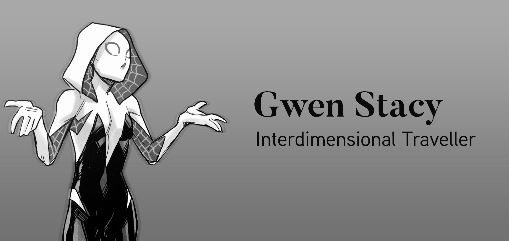

About Gwen Stacy
Gwen Stacy is the multiverse's Interdimensional Travelling Badass. Gifted with the technology from a multi-verse version of herself, Gwen is the only Spider entity that can travel across the multiverse.
Gwen at her finest.
Gwen's Characteristics
- Gwen loves helping people in need.
- Gwen will stand by her friends, no matter the cost.
- Secretly loves DnD.
- Hates Matt Murdock.
Gwen's Spider Pals from Earth 616
Here are some of Gwen's Spider Gang Pals from the Multiverse.